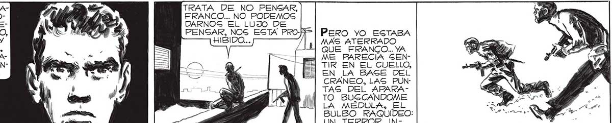

DESPUES DE TODO, TENÍAMOS MERECIDA LA COMILONA. NOS [PASARON DEMASIADAS COGAG. > ¿QUÉ TE PAGA?| ¿GIENTES ALGO ==*Y ST, EN LA NUCA? == Gl. Y NO SABEMOS LAS QUE NOS PASARAN TODAVÍA... SIENTO ALGO COMO UN PRESENTIMIENTO... ¡ME DA FRIO PENSAR EN LOS HOMBRES-ROBOTS, CON UN APARATO CLAVADO EN LA NUCA! VE MO CON ESE APARATO QUE LOS DOMINA, QUE MANEJA EL CEREBRO, LOG NERVIOS Y LOG MÚSCULOS, Y LES HACE HA CER LOQUE NUNCA SONARON... TRATA DE NO PENSAR, FRANCO... NO PODEMOS DARNOG EL LUJO DE PENSAR, NOS ESTA PROHIBIDO... » PERO YO ESTABA MAS ATERRADO QUE FRANCO. YA ME PBARECIA GENTIR EN EL CUELLO, EN LA BASE DEL CRANEO, LAG PUNTAS DEL APARATO BUGSCANDOME LA MÉDULA, EL BULBO RAQUIDEO: UN TERROR INCONTROLABLE ME SACUDIO. LLEGAMOS A LA OTRA CALLE,ONCE DE SETIEMBRE, Y LA CRUZAMOS A LA CARRERA. NOG METIMOG EN OTRA CASA. ICE DESPREOCUPADAS A MIG PALABRAS. BTENEMOG SUERTE, SEÑOR... 2 ¡Sl! ESTA LLENO DE “CASCA22 ¡DESDE AQUÍ SE MIRA BIENMO_ sS2- RUDOS'"... Y ¡MIRA AQUELLO, == EL PABELLON DE LA OR- FRANCO! AATRAVESAMOS A IQUESTA : z DE CAGA EN CAGA LA NUEVA MANZANA, TORCIENDO A LA DERECHA. OTRA CALLE, Y OTRA MANZANA. NUEVAS CAGAS, Y, POR EIN), LO QUE, DEGCEABAMOS... 149
